Introduction Plan Tab
After you calculate the amount of ProFume needed from the Fumigation Dosage Plan tab, you are ready to plan the fumigant introduction. The Introduction Plan is the third tab in the ProFume Fumiguide and is for entering introduction lines, fans calculating Actual and Permitted Introduction Rates for various areas of a structure and time to empty cylinder (s).
The objective of the Introduction Plan is to prevent a Fog-Out within the fumigated space. A fog-out is the condensation of moisture inside a fumigated structure that is caused by the air temperature reaching dew point. Methods to prevent a fog-out include: (1) using the proper inside diameter and length of the introduction hose, and (2) using appropriate fans with sufficient velocity to effectively mix the warmer air inside the structure with the cooler ProFume laden air.
No additional gas is used to pressurize the cylinder. Each full cylinder contains 125 pounds of product under about 200-300 pounds of pressure per square inch. See the table below for range of pressures at various temperatures.
Cylinder Pressure of ProFume Gas Fumigant at Various Temperatures
| Temperature |
Pressure |
Temperature |
Pressure |
| oF |
oC |
(PSIA)1 |
oC |
oF |
(PSIA)1 |
| 0 |
-17.8 |
71 |
80 |
26.7 |
264 |
| 10 |
-12.2 |
86 |
90 |
32.2 |
303 |
| 20 |
-6.7 |
103 |
100 |
37.8 |
346 |
| 30 |
-1.1 |
123 |
110 |
43.3 |
393 |
| 40 |
4.4 |
145 |
120 |
48.9 |
445 |
| 50 |
10.0 |
170 |
130 |
54.4 |
550 |
| 60 |
15.6 |
198 |
140 |
60 |
635 |
| 60 |
21.1 |
229 |
150 |
65.6 |
730 |
1Pounds per Square Inch Absolute
Select either cylinder’s temperature or cylinder pressure in order to calculate the time (min) to empty cylinder(s) attached to a particular introduction line.
After selecting temperature or pressure, you must select convert button. If a Temperature –Pressure conversion has not been performed, a warning message as shown below will appear. This conversion needs to be done before the user can proceed to enter other introduction tab information.
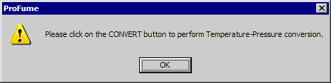
Areas that were entered on the Fumigation Dosage Plan tab will be available under the Area Name column as options in a pull-down menu. Select the area or areas where introduction lines and fans will be placed.
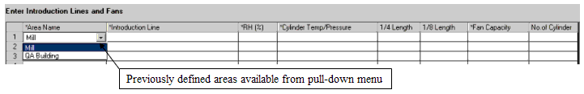
As each Area is selected on this tab, default introduction line names, relative humidity, cylinder temperature/pressure, introduction line and fan values will be filled into the table automatically. Select and type any change in the Introduction Line name you wish. Suggestion: Use descriptive terms for easy identification when entering data in Monitoring Data Input tab.
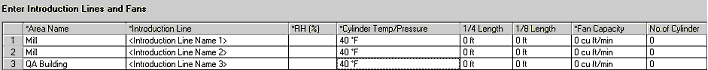
You must enter relative humidity, cylinder temperature/pressure, introduction line length (1/4" or 1/8" or combination of both) length and fan capacity before pressing the Calculate Introduction Rates button. Descriptions of these terms and columns are below:
Introduction Line is the tubing by which fumigant is released from outside the structure or chamber into the fumigated area. Valid range is 25 to 500 feet (8-152 m).
Relative Humidity (RH) is the percentage of water present in the air relative to the amount it could hold at 100% saturation.
Cylinder Temp is the temperature of cylinders. This temperature can be estimated by the air temperature if cylinders are not in direct sunlight and have had time to equilibrate to ambient temperature. Valid temperature range is 40°F - 150° F (4.4°C - 65.6°C).
Cylinder Pressure is the pressure of the cylinder that can be read directly from a pressure gauge if placed as the part of the introduction line set up.
1/4 Length is the length of the introduction line with an inside diameter of 1/4" (6.35 mm).
1/8 Length is the length of the introduction line with an inside diameter of 1/8" (3.175 mm).
Fan Capacity is the maximum airflow output of a fan.
No. of cylinder is the number of cylinder(s) manifold together to a particular introduction line.
Once values are entered, press "Calculate introduction rate" button. The ProFume Fumiguide will display Actual and Permitted Introduction Rates by Introduction Line in the bottom of the table along with time to empty cylinder(s) attached to each line. These terms are defined as:
Introduction Rate is the number of pounds per minute that the fumigant will be released into the fumigated area assuming cylinder temperature and Introduction Line inside diameter & length.
Permitted Introduction Rate is the maximum rate of fumigant release permitted in order to prevent a fog-out condition in the fumigated space.
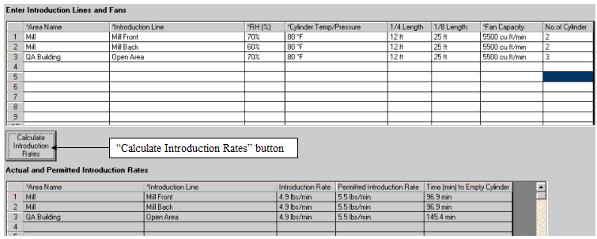
Next Step is the button on the lower right hand corner of the tab, which will advance the fumigator to the next tab within the program.
Warning Messages within the Introduction Plan Tab
If you enter a number or value outside the acceptable ranges referenced earlier, you will see a warning message box like the following:
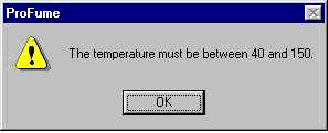
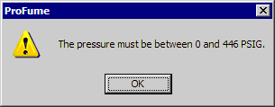
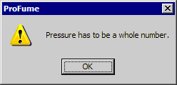
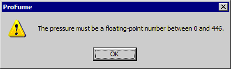
You must enter one Introduction line on this tab otherwise, you will see the warning messages like the two below. Also, you will not be able to monitoring data for that file.
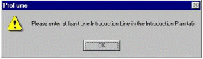
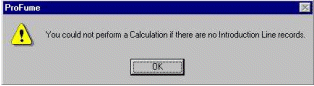
A warning message box will appear if Actual exceeds Permitted Introduction Rates.
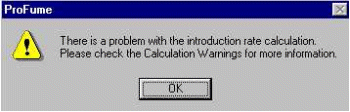
Below is a Warning message when introduction line dimensions (inside diameter and length introduction rate) exceeded the permitted introduction rate based on fan capacity.
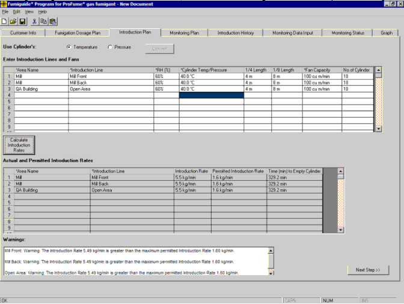
When Introduction rate exceeds Permitted Introduction rate, a warning message will pop-up indicating that you are exceeding recommended Introduction rates. The user must acknowledge the warning message before allowed to proceed to the next step. Introduction rates can be managed within the permitted introduction rate by increasing the fan capacity, increasing introduction line length, decreasing the internal diameter of the introduction line or a combination of all.
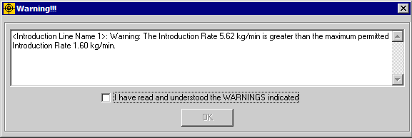